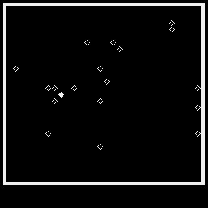

1000 1c7f 0000 b ...
JAGD Bei diesem Spiel gilt es, das auf
dem Bildschirm freibewegliche Ziel
() mit dem lenkbaren Viereck ()
zu rammen.
Das Viereck laesst sich mit den
Tasten:
E,F,G
M,N,O
U,V,W
steuern. Und zwar: F nach oben,
G nach diagonal,rechts oben
Fuer jede Spielrunde erhalten
300 Punkte, von denen die
Schritte des Faengers und des
Gejagden abgezogen werden !
Zeichensatz UTF-8+Z1013()+CTRL()-ohne Umlaute(äöüß)
1 GOTO4999
2 GOSUB 20000
3 U=0;V=0;K=0
4 W=F
6 FOR H=1TOW
7 O.12;TAB(1024-96)
8 GOTO 1000
10 IFC#181GOTO20
11 IFR=-33 R=-31;GOTO 95
12 IFR=31 R=33;GOTO 95
13 R=33;GOTO95
20 IFC#183GOTO30
21 IFR=-31 R=33;GOTO 95
22 IFR=-33 R=31;GOTO 95
23 R=31;GOTO95
30 IFC#180GOTO40
31 IFR=33 R=31;GOTO 95
32 IFR=-31 R=-33;GOTO 95
33 R=-33;GOTO95
40 IFC#182GOTO50
41 IFR=33 R=-31;GOTO 95
42 IFR=31 R=-33;GOTO 95
43 R=-31;GOTO95
50 IF C=201 GOTO 2000
60 R=R*(-1)+2-RND(3)
95 Z=Z+R
105 C=PEEK(Z)
107 IF C=32 GOTO 110
108 Z=Z-R
109 GOTO 10
110 POKEM,32
112 U=U+1
115 POKEZ,140
120 M=Z
125 CALL(HEX(3E00))
130 S=PEEK(15888)
140 IF S=0 GOTO 300
150 IF S='G' D=-31
160 IF S='F' D=-32;GOTO 300
170 IF S='E' D=-33;GOTO 300
180 IF S='M' D=-1;GOTO 300
190 IF S='U' D=31;GOTO 300
200 IF S='V' D=32;GOTO 300
210 IF S='W' D=33;GOTO 300
220 IF S='O' D=1;GOTO 300
230 IF S='N' D=0
300 E=E+D
310 IF PEEK(E)=32 GOTO 400
320 IF PEEK(E)=140 GOTO 2000
330 E=E-D
340 D=0
400 POKE P,32
405 IF D#0 V=V+1
410 POKE E,201
420 P=E
430 GOTO 95
1000 FOR J=HEX(EC00)TOHEX(EC1F)
1010 POKEJ,183
1020 NEXT J
1022 POKEHEX(EFA0),32
1030 POKEHEX(EC1F),179
1040 FOR J=HEX(EC3F)TOHEX(EF9F)STEP32
1050 POKEJ,180
1060 NEXT J
1070 POKEHEX(EF9F),176
1080 FORJ=HEX(EF9E)TOHEX(EF80)STEP -1
1090 POKEJ,182
1100 NEXT J
1110 POKEHEX(EF80),177
1120 FORJ=HEX(EF60)TOHEX(EC00)STEP-32
1130 POKEJ,181
1140 NEXT J
1150 POKEHEX(EC00),178
1156 Y=18
1160 FOR I=1 TO Y
1165 J=138
1170 POKE(HEX(EC21)+RND(29)+RND(23)*32),J
1180 NEXT I
1190 U=0
1200 V=0
1210 Z=HEX(EC21)+RND(29)+(RND(25)*32)
1220 E=HEX(EC21)+RND(29)+(RND(25)*32)
1230 P=E
1240 D=0
1500 GOTO 95
2000 POKEP,32
2001 POKEZ-32,154
2003 POKEZ-1,151
2004 POKEZ,175
2005 POKEZ+1,148
2007 POKEZ+32,157
2008 FORJ=0TO25;NEXT J
2009 J=207
2010 POKEZ-32,32
2011 POKEZ-1,32
2012 POKEZ,32
2013 POKEZ+1,32
2014 POKEZ+32,32
2015 J=J+1;POKEZ,J;IFJ>223J=208
2016 Z=Z+32
2022 IFZ>HEX(EFFF)GOTO2030
2023 POKEZ-32,32
2024 GOTO2015
2030 K=K+300-U-V
2040 P."PUNKTE DER RUNDE:",#4,300-U-V
2045 P.
2050 P."GESAMTPUNKTZAHL :",#4,K,
2055 POKEHEX(EFF5),32
2060 FOR J=0 TO 2000;NEXT J
2100 NEXT H
2150 P.
2200 TAB(14*32)
2300 P."Ihr Rundendurchschnitt:",#1,K/W
2400 TAB(96)
2500 P."Noch ein Spiel ? J/N"
2550 TAB(288)
2560 POKEHEX(EFE0),32
2600 F=INCHAR
2700 IF F='J' GOTO 6000
3000 STOP
4999 O.12
5000 P."Bei diesem Spiel gilt es,das"
5001 P.
5005 P."auf dem Bildschirm freibeweg-"
5006 P.
5010 P."liche Ziel () mit dem lenkba-"
5011 P.
5015 P."ren VierecK () zu rammen."
5016 P.
5018 P.
5020 P." Das Viereck laesst sich mit"
5021 P.
5025 P."Tasten E,F,G,M,N,O,U,V und W"
5026 P.
5030 P."steuern. Und zwar: F nach oben,"
5031 P.
5035 P."G nach diagonal,rechts oben "
5036 P.
5041 P.
5042 P.
5043 P."Fuer jede Spielrunde erhalten "
5044 P."300 Punkte, von denen die "
5045 P."Schritte des Faengers und des "
5046 P."Gejagden abgezogen werden !"
5047 P.;P.
5048 P.
5049 P.
5050 P."Alles klar ? J/N"
5060 F=INCHAR
5070 IF F='N' GOTO 5000
6000 O.12
6010 TAB(160)
6020 P."Wieviele Spielrunden moechten "
6030 P."Sie absolvieren ?"
6040 P.;P.
6050 INPUT"(1...100) "W
6060 IFW<0 W=1
6070 IFW>100 W=100
6075 F=W
6080 GOTO 2
20000 W=HEX(3E00)
20010 POKEW,HEX(CD)
20020 POKEW+1,48
20030 POKEW+2,HEX(F1)
20040 POKEW+3,50
20050 POKEW+4,16
20060 POKEW+5,HEX(3E)
20070 POKEW+6,HEX(C9)
20080 RETURN